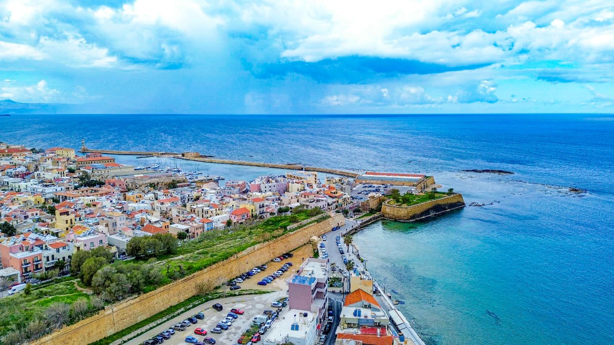
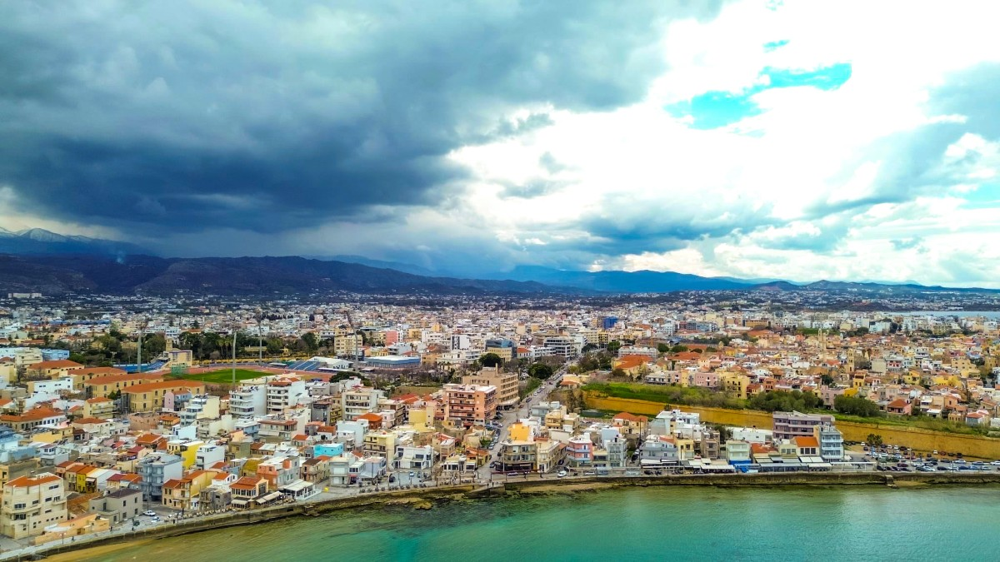
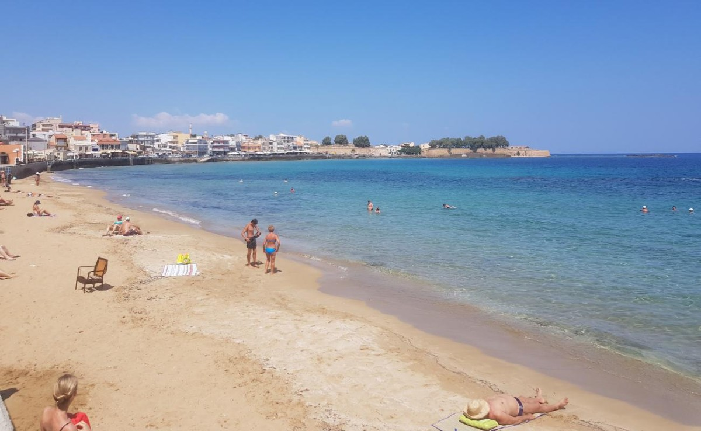
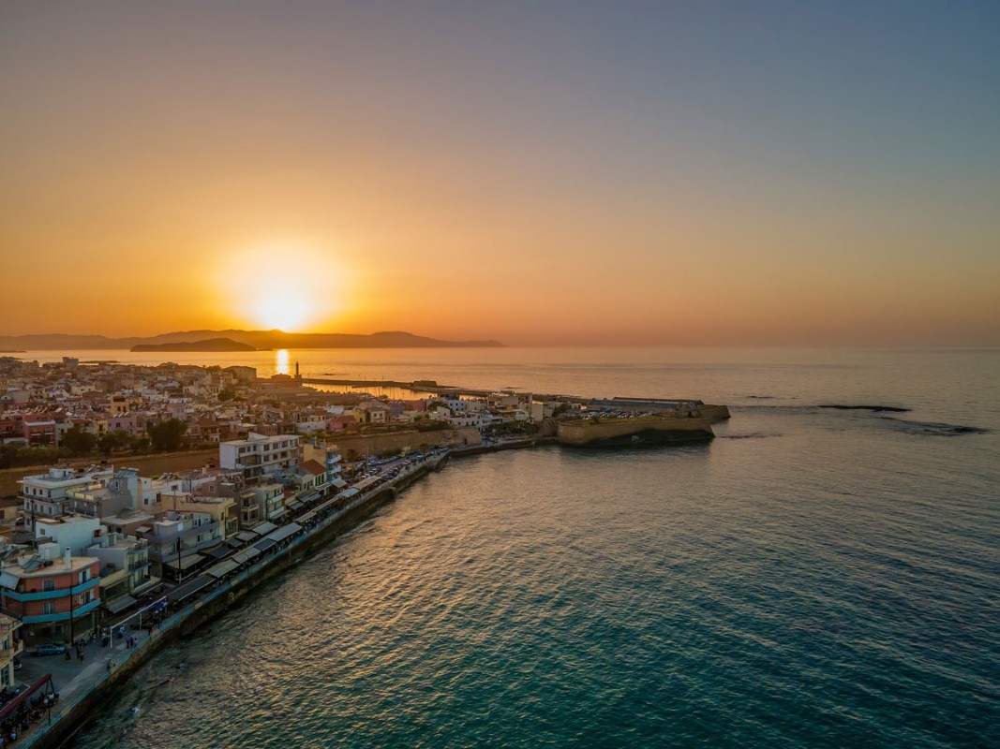

Orpheus House is located in Koum Kapi, one of the most charming and atmospheric seaside neighbourhoods of Chania.
Just outside the eastern walls of the Old Town, Koum Kapi stretches along the waterfront and offers a wonderful combination of sea, history and everyday Cretan life. The neighbourhood is known for its small sandy beach, seaside cafés, restaurants and relaxed atmosphere a favourite spot for both locals and visitors.
The name Koum Kapi comes from the Turkish words Kum Kapısı, meaning “Sand Gate”, referring to the sandy shore and the nearby opening in the Venetian walls. During the Ottoman period, the area was known as a place where people could access the sea through this part of the old fortifications.
Koum Kapi also has a strong connection with Chania’s more recent history. In the late 19th and early 20th centuries, the neighbourhood became home to many workers and fishermen, giving it the lively, authentic character that still distinguishes it today.
What makes Koum Kapi special is the way its history blends naturally with modern Chania. Old stone buildings and traces of the city’s fortifications meet colourful cafés, restaurants and small bars along the sea. Locals come here for their morning coffee, an evening walk or dinner by the water, while travellers enjoy being close to the Old Town without being surrounded by its busiest streets.
One of the things that makes Orpheus House trully special is it's location. Set in Koum Kapi, outside the eastern walls of Chania's Old Town, the house gives you the best of both worlds: The atmosphere and charm of the historic city with the sea and the more relaxed seaside neighbourhound right outside your door.
You can start your morning with coffee overlooking the sea, walk to the beach for a swim, and then stroll into the Old Town to explore it's narrow streets, historic buildings and Venetian Harbor, all without getting to the car.
Around the house you will find cafes, restaurants, tavernas and bars, making it easy to enjoy a meal or an evening dring, without planning a journey or enjoy an evening walk.
It is a location that allows you to experience different sides of Chania in the same day a quiet morning by the sea, an afternoon exploring the Old Town and a relaxed dinner overlooking the water.
Koum Kapi is not simply a place to stay. It is a small piece of Chania where the city, the sea and its history meet.



